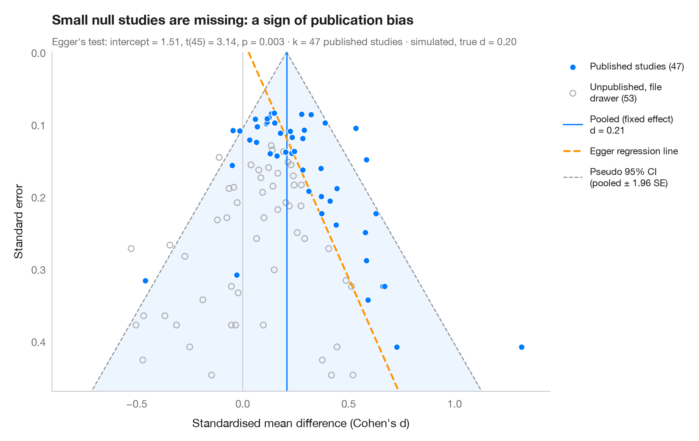

漏斗图
各研究效应量对其标准误作图，附伪 95% 漏斗区域和 Egger 检验。

每个点代表一项研究：x 轴为效应量，（倒置的）y 轴为标准误，因此大型、精确的研究位于顶部。没有偏倚时，这些点会围绕合并效应形成对称的漏斗，其中 95% 落在伪置信区域（± 1.96 SE）之内。这里左下角是空的：结果为阴性的小型研究缺失了。Egger 回归检验（标准正态离差对精度回归）量化了这种不对称性；其拟合线以虚线表示。
该元分析由 numpy 模拟（设定随机种子）：100 项试验，真实标准化效应为 0.2，其中不显著的小型试验大多被锁进了“抽屉”（灰色空心点——在现实中永远无法观测到）。Egger 检验为 statsmodels 的 OLS 拟合。
代码及图中文字均为英文。
import matplotlib.pyplot as plt
import numpy as np
import statsmodels.api as sm
from scipy import stats
# Simulate 100 trials; small, non-significant ones are rarely published
rng = np.random.default_rng(2)
k = 100
n = np.round(np.exp(rng.uniform(np.log(10), np.log(300), k))) # participants per arm
se = np.sqrt(2 / n)
d = rng.normal(0.2, 0.05, k) + rng.normal(0, se)
published = (stats.norm.sf(d / se) < 0.05) | (n > 120) | (rng.uniform(size=k) < 0.15)
dp, sp = d[published], se[published]
# Fixed-effect pooled estimate and Egger's test: z = b0 + b1 · precision
w = 1 / sp**2
pooled = np.sum(w * dp) / w.sum()
egger = sm.OLS(dp / sp, sm.add_constant(1 / sp)).fit()
b0, b1 = egger.params
fig, ax = plt.subplots(figsize=(9, 5.6))
s_grid = np.linspace(0, se.max() * 1.05, 100)
ax.fill_betweenx(s_grid, pooled - 1.96 * s_grid, pooled + 1.96 * s_grid, color="#007AFF",
alpha=0.07, lw=0)
for sign in (-1, 1):
ax.plot(pooled + sign * 1.96 * s_grid, s_grid, color="#8E8E93", lw=1, ls="--",
label="Pseudo 95% CI\n(pooled ± 1.96 SE)" if sign > 0 else None)
ax.axvline(pooled, color="#007AFF", lw=1.2, label=f"Pooled (fixed effect)\nd = {pooled:.2f}")
ax.axvline(0, color="#C7C7CC", lw=0.8)
ax.plot(b1 + b0 * s_grid, s_grid, color="#FF9500", lw=1.8, ls="--", label="Egger regression line")
ax.scatter(d[~published], se[~published], s=30, facecolor="none", edgecolor="#AEAEB2", lw=1,
label=f"Unpublished, file\ndrawer ({(~published).sum()})")
ax.scatter(dp, sp, s=34, color="#007AFF", edgecolor="white", lw=0.7, zorder=3,
label=f"Published studies ({published.sum()})")
ax.invert_yaxis()
ax.set_ylim(se.max() * 1.05, 0)
ax.set_xlim(-0.9, 1.45)
ax.set_xlabel("Standardised mean difference (Cohen's d)")
ax.set_ylabel("Standard error")
ax.grid(axis="y", visible=False)
handles, labels = ax.get_legend_handles_labels()
order = [4, 3, 1, 2, 0]
ax.legend([handles[i] for i in order], [labels[i] for i in order], loc="upper left",
bbox_to_anchor=(1.01, 1), fontsize=9, labelspacing=1)
ax.set_title("Small null studies are missing: a sign of publication bias", pad=26)
ax.text(0, 1.02, f"Egger's test: intercept = {b0:.2f}, t({egger.df_resid:.0f}) = "
f"{egger.tvalues[0]:.2f}, p = {egger.pvalues[0]:.3f} · k = {published.sum()} published "
f"studies · simulated, true d = 0.20", transform=ax.transAxes, fontsize=9.5, color="#6E6E73")
plt.show()
图表使用了可选的 PyStatlas 样式：添加 plt.style.use("statlas.mplstyle") 即可完全还原其外观。
如何引用
PyStatlas 由 Thierry Warin 创建并维护。如果它对你的工作有所帮助，敬请引用。
Warin, T. (2026). Funnel plot. In PyStatlas: The Python Gallery of Statistical Graphics. https://warint.github.io/pystatlas/inference-uncertainty/funnel-plot/
@misc{warin2026statlas,
author = {Warin, Thierry},
title = {PyStatlas: The Python Gallery of Statistical Graphics},
year = {2026},
howpublished = {\url{https://warint.github.io/pystatlas/}},
note = {Source code: https://github.com/warint/pystatlas}
}